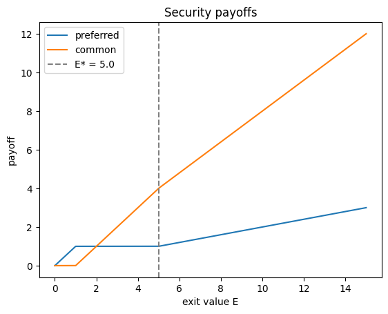

import sys, numpy as np, matplotlib.pyplot as plt
sys.path.insert(0,'..')
from engine import ch10
from dataclasses import replaceMFAA Chapter 10 Laboratory
Venture Portfolio and Security Engine (book §10.8)
Three coupled modules: financing tree, cap table (preference stacks, conversion), and portfolio/inference (power laws, skill vs luck). Seed 20261000.
1. E3 — The down-round exit: security payoffs and conversion
Convertible preferred pays max{min(L,E), fE}; conversion is optimal iff E ≥ E* = L/f.
p = ch10.VentureParams(pref_mult=1.0, invested=1.0, ownership=0.2)
E = np.linspace(0, 15, 300)
lad = ch10.class_value_ladder(p, E)
plt.plot(E, lad['preferred'], label='preferred')
plt.plot(E, lad['common'], label='common')
plt.axvline(lad['conversion_threshold'], color='grey', ls='--', label=f"E* = {lad['conversion_threshold']:.1f}")
plt.xlabel('exit value E'); plt.ylabel('payoff'); plt.legend(); plt.title('Security payoffs')
print('conservation error:', lad['conservation_error'])conservation error: 1.7763568394002505e-15
2. E1 — Tail index sensitivity (power laws)
The k-th Pareto moment converges iff k < α.
import pandas as pd
pd.DataFrame(ch10.pareto_moment_convergence(1.5, 0.3)['rows'])| N | moment_1 | moment_2 | |
|---|---|---|---|
| 0 | 100 | 0.847732 | 1.861539 |
| 1 | 1000 | 0.845130 | 2.566828 |
| 2 | 10000 | 0.895730 | 16.543762 |
| 3 | 100000 | 0.862586 | 7.003617 |
3. E4 — Skilled or lucky?
Locate a 4.1× fund in the luck distribution; how many consecutive funds shift the odds to 9:1 for skill?
p = ch10.VentureParams(n=28, success_prob=0.5, alpha=1.2, x_m=0.3, prior_sd=0.25)
sl = ch10.skill_vs_luck(p, observed_multiple=4.1)
print(f"posterior P(positive drift): {sl['posterior_p_positive']:.3f}")
print(f"consecutive funds for 9:1 skill odds: {sl['consecutive_funds_for_9to1']}")posterior P(positive drift): 0.612
consecutive funds for 9:1 skill odds: 54. Validation checks
v = ch10.validation_checks()
for k,d in v.items():
if isinstance(d,dict): print(k, 'PASS' if d['pass_'] else 'FAIL')
print('ALL:', v['all_pass'])V1_conservation PASS
V2_conversion_threshold PASS
V3_pareto_moments PASS
V4_expected_max PASS
V5_participating_dominates PASS
V6_reproducible PASS
ALL: True